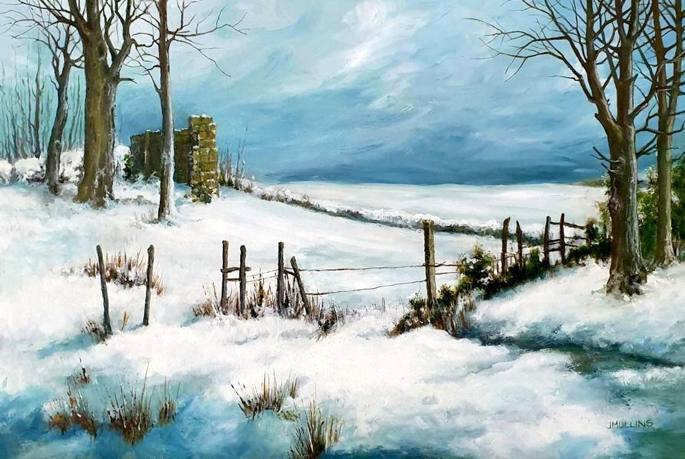

Ruined Building in Snow
No. 112- Medium
- Oil on canvas board
- Size
- 30 × 45 cm
- Year
- 2007
- Inspired by
- Co Mayo, Ireland
- Price
- £250
Somewhere along a path in Co Mayo, Ireland, where this long-abandoned building stands out in the snow.
Ask about this paintingOr email enquiries@joanmullinsart.co.uk, quoting No. 112. UK only. Collection from Nantwich is free; UK postage is quoted when you enquire.


 A View of the Hampshire Downs
A View of the Hampshire Downs Landscape with Red Roofs
Landscape with Red Roofs Redroofed barn - France
Redroofed barn - France